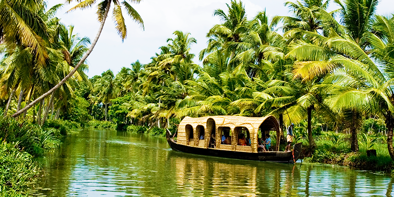
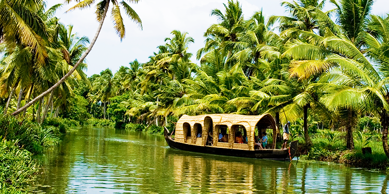
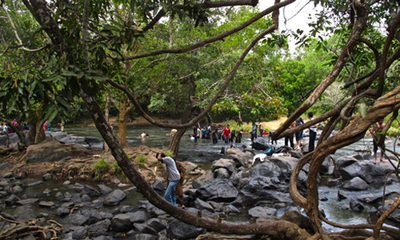
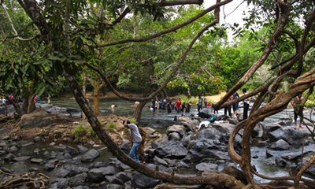

Tropical Paradise
Kerala stuns with serene beaches, verdant jungles, and cascading waterfalls.
About Kerala
Kerala is a pioneer in ecotourism, promoting responsible travel that protects its delicate environment. From staying in eco-friendly treehouses to exploring the backwaters in solar-powered boats, Kerala allows you to minimize your footprint while maximizing your experience.
Kerala, a narrow coastal stretch nestled in India's southwest corner, is a land blessed with both natural beauty and cultural richness. Backwaters snake through lush green landscapes, while the Western Ghats rise majestically in the east. Historical sites like spice markets and ancient temples stand alongside pristine beaches and vibrant festivals. Renowned for its Ayurvedic practices and delicious cuisine, Kerala offers a unique and unforgettable experience for every visitor, from tranquility seekers to adventure enthusiasts.
Houseboat Paradise: A quintessential Kerala experience is a cruise on a traditional houseboat. Glide through the palm-fringed canals, spotting local village life and witnessing the beauty of the Kuttanad rice fields. Enjoy the tranquility of the backwaters and soak in the stunning natural beauty of Kerala.
Festivals and Artforms: Kerala's vibrant culture comes alive in its numerous festivals. Witness the spectacular Theyyam performances with their elaborate costumes and ritualistic dances, or be enthralled by the snake boat races, a test of speed and skill. Kerala is also known for its classical dance forms like Kathakali and Mohiniyattam, which tell captivating stories through movement and music.

Top Destinations in Each Districts
-
Thiruvananthapuram
The capital city of Kerala, Thiruvananthapuram is known for its rich history and culture. Some of the must-visit places here include the :
- Padmanabhaswamy Temple
- Kovalam Beach
- Kuthiramalika Palace
- Napier Museum


-
Kollam
Also known as Quilon, Kollam is a port city with a rich history. Some of the interesting places to visit here include the , , and .
- Dutch Cemetery
- Tangasseri Lighthouse
- Ashtamudi Lake

-
Pathanamthitta
Pathanamthitta is famous for its Hindu pilgrimage sites like Sabarimala Temple. It is also known for its backwaters and houseboat cruises.
- Sabarimala Sri Dharmasastha Temple
- Konni Forest Reserve
- Perunthenaruvi Waterfall


-
Alappuzha
Alappuzha, also known as Alleppey, is famous for its backwaters and houseboat cruises. It is also known for its beaches and Kuttanad, a region below sea level.
- Kuttanad
- Alappuzha Beach
- Alleppey Backwaters
 

-
Kottayam
A center for education and culture, Kottayam is also known for its beautiful churches and temples. Kumarakom, a backwater destination, is located in this district.
- Kumarakom Bird Sanctuary
- Illikkal Kallu
- Marmala Waterfalls

-
Idukki
Idukki is a hill station known for its lush greenery, waterfalls, and wildlife sanctuaries. This is a great place to escape the hustle and bustle of city life.
- Idukki Arch Dam
- Periyar National Park
- Gavi
- Idukki Wildlife Sanctuary


-
Ernakulam
Ernakulam is the commercial capital of Kerala. It is a bustling city with a mix of historical sites, beaches, and shopping malls. Kochi, a major port city, is located in Ernakulam.
- Mattancherry Palace
- Wonderla
- Fort Kochi

-
Thrissur
Thrissur, Kerala's cultural capital, is famous for the dramatic Thrissur Pooram temple festival, where decorated elephants parade through the city. Beyond the festivities, visitors can explore the ancient Vadakkumnathan Temple or delve into Kerala's classical arts at the Kerala Kalamandalam center.
- Punnathur Kotta (Anakkotta)
- Vilangan Hills
- Athirappilly Waterfalls
- Kerala Kalamandalam


-
Palakkad
Palakkad, also known as the "Gateway of Kerala," is a city at the foothills of the Western Ghats, known for its scenic beauty, historical sites, and rich cultural heritage.
- Silent Valley National Park
- Parambikulam Tiger Reserve
- Malampuzha Dam and Gardens
- Attapadi Reserve Forest


-
Malappuram
Malappuram is a beautiful district with a rich history and culture. With its temples, beaches, hills, and wildlife sanctuaries, Malappuram offers something for everyone.
- Nilambur Teak Museum
- Kottakkunnu Park
- Kodikuthimala
- Padinharekara Beach


-
Kozhikode
Kozhikode, also known as Calicut, is a historically significant city on India's Malabar Coast. It was once a major spice trading center and is known for its beautiful beaches, forts, and museums
- Kappad Beach
- Kadalundi Bird Sanctuary
- Pazhassi Raja Museum & Art Gallery
- Kozhikode Beach

-
Wayanad
Wayanad, a hill station nestled in Kerala's Western Ghats, is a paradise for nature lovers. Trek through misty forests to hidden waterfalls, spot wildlife in the Wayanad Wildlife Sanctuary, or boat across serene lakes, all while breathing in Wayanad's refreshing mountain air.
- Edakkal Caves
- Wayanad Wildlife Sanctuary
- Kuruva Island
- Pookode Lake

 


-
Kannur
Kannur, blessed with both natural beauty and historical charm, offers a variety of stunning locations. Here are a few strong contenders for the title of most beautiful place
- Payyambalam Beach
- Palakkayam thattu
- Paithal mala
- Ezhimala Hills

-
Kasaragod
Kasaragod offers something for everyone, from those seeking relaxation on pristine beaches to adventure enthusiasts and nature lovers. With its historical significance, cultural treasures, and captivating natural beauty, Kasaragod promises an unforgettable experience. Kasaragod, nestled in Kerala's northernmost region, boasts a captivating blend of scenic locations, historical sites, and cultural experiences. Here are some must-visit places in Kasaragod:
- Bekal Fort
- Bekal Beach
- Ranipuram
- Malom Wildlife Sanctuary


Learn more about Kerala : click here
Back to top : click here